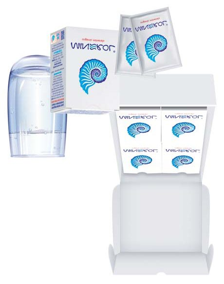
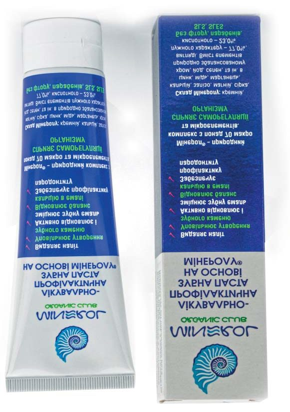

Наука · журнал «ДентАрт» 2022 №3
Карієспрофілактична ефективність «Мінеролу»
Caries-prophylactic efficiency of «Minerol»
Карієс зубів — серйозна медична і соціальна проблема у багатьох промислово розвинених країнах, країнах з перехідною економікою. Це найважливіша проблема здоров’я ротової порожнини у дітей раннього віку.6-8
До цього часу не проводилася оцінка впливу карієсогенного раціону на щурах на фоні використання лікувально-профілактичного комплексу, що включає дієтичну добавку «Мінерол» та зубну пасту «Мінерол», а також клінічна оцінка ефективності впливу лікувально-профілактичних заходів на стоматологічний статус дітей 6-7 років з карієсом зубів. Тож наше дослідження актуальне для сучасної стоматології дитячого віку.
Метою цієї роботи було дослідження карієспрофілактичної дії дієтичної добавки «Мінерол» та зубної пасти «Мінерол» на щурах, а також оцінка ефективності застосування цих препаратів у дітей 6-7 років із карієсом зубів.


Матеріали та методи дослідження
Експеримент було проведено на 30 одномісячних самках лабораторних щурів масою від 46 до 58 г. Щури перебували у стандартних умовах віварію, мали вільний доступ до корму і питної води. Тварини були розподілені на три групи, по 10 щурів у кожній: 1 — інтактна на стандартному раціоні віварію; 2 — карієсогений раціон; 3 — на тлі карієсогеного раціону щоденне пероральне введення препарату «Мінерол» у дозі 1 г/кг та чищення зубів пастою «Мінерол».
Склад карієсогеного раціону за М. Г. Бугаєвою та С. А. Нікітіним: 57 % цукру, 18,5 % сиру, 18,5 % сухарів із пшеничного хліба, 5 % соняшникової олії, 1 % солі, 5 табл. «Ундевіту» / кг корму.1
«Мінерол» (виробник НВМП «ГОБОР», Україна) є джерелом мінералів і містить майже всі макро- та мікроелементи (кальцій, кремній, залізо, магній, натрій, сірку, марганець, калій, фосфор, йод, літій, цинк, мідь, хром, селен), потрібні для фізіологічних процесів. Також виробник препарату пропонує його як природний сорбент, сорбційна поверхня якого — до 260 м2/г, а катіонообмінна ємність — до 100 мг-екв. на 100 г речовини. Сировина «Мінеролу» — глинистий мінерал монтморилоніт, що видобувається з глибини 70-80 м.2
Тривалість експерименту становила 50 днів. Тварин виводили з експерименту шляхом тотального кровопускання із серця. Для подальших досліджень виділяли щелепи із зубами для підрахунку кількості та глибини каріозних порожнин, пульпу, в якій визначали активність кислої та лужної фосфатаз за допомогою паранітрофенилфосфату.3
У клінічному дослідженні 2019 року брали участь 35 пацієнтів — діти віком 6-7 років з карієсом зубів, учні школи №121 м. Одеси (20 осіб — основна група, 15 осіб — група порівняння).
При оцінці дії запропонованого лікувально-профілактичного комплексу було використано карієспрофілактичну ефективність, що розраховується за приростом індексу КПВз за 2 роки спостережень.4
Група порівняння отримувала базову терапію (санація ротової порожнини, професійна гігієна та навчання навичкам особистої гігієни). Основна група пацієнтів додатково до базової терапії одержувала розроблений лікувально-профілактичний комплекс (табл. 1).
При статистичній обробці отриманих результатів використовувалася комп’ютерна програма STATISTICA 6.1. для оцінки їхньої достовірності та похибок вимірювань. Статистично значущу відмінність між альтернативними кількісними ознаками з розподілом, відповідним нормальному закону, оцінювали за допомогою t-критерію Стьюдента.
| Використовувані препарати | Дозування | Термін застосування | Механізм дії |
|---|---|---|---|
| «Мінерол» Дієтична добавка | 1 ч. л. на 150–200 мл води, 2–3 рази на день з водою 40–45 °C за 30 хвилин до їди | 30 днів | Запобігає аліментарній недостатності в період формування зубощелепного апарату у дітей, сприяє активації процесів ремінералізації зубів |
| «Мінерол» Зубна паста | Вранці та ввечері | 30 днів | Нормалізує рН ротової порожнини, забезпечуючи комплексну підтримку здоров’я зубів, запобігає ерозії та потемнінню емалі |
Примітка: лікувально-профілактичні заходи повторювалися двічі на рік.
Результати дослідження та обговорення
Як показано у таблиці 2, споживання щурами карієсогенного раціону протягом 50 днів сприяло розвитку активного каріозного процесу. Кількість каріозних порожнин у зубах 2-ої групи тварин збільшилася у 2,7 раза (р < 0,001), а їхня глибина ще більше — у 3,7 раза (р < 0,001).
Щоденне введення щурам 3-ої групи, яким моделювали карієс зубів, препарату «Мінерол» та чищення зубів пастою «Мінерол» мали карієспрофілактичний ефект, достовірно знизивши кількість каріозних порожнин на 35,0 % (р1 < 0,001), а їхню глибину на 54,6 % (р1 < 0,001). Кількість каріозних уражень у зубах щурів 3-ої групи, незважаючи на суттєві поліпшення, дещо перевищували нормальні значення, зафіксовані у інтактних щурів, які споживали стандартну дієту віварію (р < 0,05), а глибина порожнини відповідала показнику в інтактній групі (табл. 2).
| Групи щурів | Каріозні ураження | |
|---|---|---|
| Кількість, середня на 1 щура | Глибина, бали | |
| Дієта віварію | 3,0 ± 0,8 | 3,2 ± 0,8 |
| Карієсогенний раціон (КР) | 8,0 ± 0,6 (р < 0,001) | 11,9 ± 0,3 (р < 0,001) |
| КР + «Мінерол» + зубна паста «Мінерол» | 5,2 ± 0,4 (р < 0,05; р1 < 0,001) | 5,4 ± 1,3 (р < 0,01; р1 < 0,001) |
Примітка: р – показник вірогідності відмінностей від групи «Дієта віварію»; р1 – показник вірогідності відмінностей від групи «Карієсогенний раціон».
У таблиці 3 подано результати визначення активності кислої та лужної фосфатаз у пульпі різців щурів. Відомо, що активність цих ферментів у пульпі зубів визначає мінералізуючу функцію пульпи.
Активність кислої фосфатази в пульпі зубів щурів 2-ої групи збільшилася на 86,9 % (р < 0,001), а активність лужної фосфатази пульпи, навпаки, знизилася на 33,2 % (р < 0,001). Кисла фосфатаза — деструктивний фермент, який діє при низьких значеннях рН і руйнує тканини зубів. Лужна фосфатаза бере участь у процесах мінералізації та формуванні кристалів гідроксиапатиту твердих тканин зуба і діє при оптимумі рН у лужному діапазоні. Тому значним збільшенням активності кислої фосфатази та одночасним зниженням активності лужної фосфатази в пульпі зубів щурів 2-ої групи можна пояснити збільшення у них кількості та глибини каріозних уражень через порушення мінералізуючої функції пульпи.
Пероральне введення «Мінеролу» і чищення зубів пастою «Мінерол» щурам 3-ої групи в карієсогенних умовах мали виражений профілактичний вплив на порушену активність фосфатаз пульпи. Так, під впливом перорального застосування «Мінеролу» у поєднанні з гігієною зубною пастою «Мінерол» активність кислої фосфатази пульпи знизилася на 39,5 % (р1 < 0,001), а лужної — збільшилася на 35,7 % (р1 < 0,05). При цьому рівень активності обох фосфатаз пульпи відповідав значенням пульпи у інтактних тварин (р > 0,1).
| Групи щурів | Активність кислої фосфатази, нкат/г | Активність лужної фосфатази, нкат/г |
|---|---|---|
| Дієта віварію | 0,023 ± 0,002 | 1,93 ± 0,12 |
| Карієсогенний раціон (КР) | 0,043 ± 0,003 (р < 0,001) | 1,29 ± 0,10 (р < 0,001) |
| КР + «Мінерол» + зубна паста «Мінерол» | 0,026 ± 0,002 (р > 0,1; р1 < 0,001) | 1,75 ± 0,11 (р > 0,1; р1 < 0,05) |
Примітка: р – показник вірогідності відмінностей від групи «Дієта віварію»; р1 – показник вірогідності відмінностей від групи «Карієсогенний раціон».
Застосування комплексу не змогло повністю загальмувати розвиток каріозного процесу цих щурів, як бачимо в таблиці 2. На наш погляд, це можна пояснити дуже жорсткими умовами карієсогенної дієти Бугаєвої та Нікітіна, споживання якої викликало, окрім розвитку карієсу, і суттєве відставання у прирості маси тіла щурів.
Застосування комплексу «Мінерол» не вплинуло на зниження маси тіла тварин. Це може бути пов’язано і з сорбційними властивостями препарату. Тому, вважаємо, доцільно досліджувати цей комплекс із додатковим поєднанням препаратів кальцію.
На наступному етапі дослідження ми оцінювали стан твердих тканин зубів з карієсом у дітей 6-7 років міста Одеси у процесі проведення запропонованих профілактичних заходів (табл. 4).
У початковому стані значення показника твердих тканин зубів КПВз особливо не відрізнялися між обома досліджуваними групами дітей (p > 0,1). Через пів року спостережень приріст карієсу постійних зубів у дітей основної групи був 0,35, що на 25,6 % менше, ніж у дітей, що отримували тільки базову терапію. Тенденція загальмовування каріозного процесу в групі, що вживала дієтичну добавку та зубну пасту «Мінерол», спостерігалася і через рік та два роки дослідження і помітно відрізнялася від групи порівняння (p < 0,01). При цьому приріст карієсу зубів в основній групі був у 1,47 раза менший, ніж у групі порівняння.
| Строки | Основна група | Група порівняння | ||
|---|---|---|---|---|
| КПВз | Приріст | КПВз | Приріст | |
| Початковий | 0,42 ± 0,06 (p > 0,1) | – | 0,45 ± 0,05 | – |
| Через 6 міс. | 0,77 ± 0,09 (p > 0,1) | 0,35 | 0,92 ± 0,08 | 0,47 |
| Через 1 рік | 0,97 ± 0,11 (p < 0,01) | 0,20 | 1,22 ± 0,10 | 0,30 |
| Через 2 роки | 1,18 ± 0,9 (p < 0,01) | 0,21 | 1,57 ± 0,13 | 0,35 |
| Приріст за 2 роки | – | 0,76 | – | 1,12 |
Примітка: р – показник вірогідності відмінностей від групи порівняння.
Отримані результати свідчать про достатньо високий профілактичний ефект запропонованого лікувально-профілактичного комплексу, що містив дієтичну добавку та зубну пасту «Мінерол».
Висновки
Експериментальні дослідження ефективності комплексу «Мінерол» встановили його дуже високу профілактичну дію щодо запобігання розвитку каріозного процесу та порушенню мінералізуючої функції пульпи зубів тварин, які перебували у карієсогенних умовах.
Отримані результати дають підставу використовувати пропонований лікувально-профілактичний комплекс препаратів у клінічній практиці у дітей 6-7 років з карієсом зубів.
Лікувально-профілактичний захід у дітей 6-7 років з карієсом зубів, розроблений на підставі експериментальних досліджень, дозволив загальмувати каріозний процес, але, на наш погляд, доцільно досліджувати цей комплекс із додатковим поєднанням препаратів кальцію, що ми відобразимо в наступних наших дослідженнях.
Література
- Стоматология славянских государств: сборник трудов по материалам VIII Международной научно-практической конференции / под ред. А. В. Цимбалистова, Б. В. Трифонова, А. А. Копытова. – Белгород: ИД «Белгород» НИУ «БелГУ», 2015. – 386 с.
- Борисенко Л. Н., Стародубцев Е. Н. Формула здоровья. – Киев, 2015. – 56 с.
- Методи дослідження стану кишечнику та кісток у лабораторних щурів. Довідник / О. А. Макаренко, Л. М. Хромагіна, І. В. Ходаков та ін. – Одеса: видавець С. Л. Назарчук, 2022. – 81 с.
- Хоменко Л. О., Чайковський Ю. Б., Смоляр Н. І. та ін. Терапевтична стоматологія дитячого віку. – Київ: Книга плюс, 2014. – 432 с.
- Макаренко О. А. Как защитить костную ткань. – Одеса: КП «Одеська міська друкарня», 2013. – 52 с.
- Шаковец Н. В. Факторы возникновения и развития кариеса зубов у детей раннего возраста // Педиатрия. – 2011. – № 2. – Минск.
- Ковальчук В. В. Патогенетическое обоснование профилактики раннего детского кариеса у детей непромышленного региона: дис... канд. мед. наук: 14.01.22. – Одесса, 2016. – 162 с.
- Біденко Н. В. Ранній карієс тимчасових зубів: перспективи вирішення проблеми // Клінічна стоматологія. – 2011. – № 1–2. – С. 64–68.